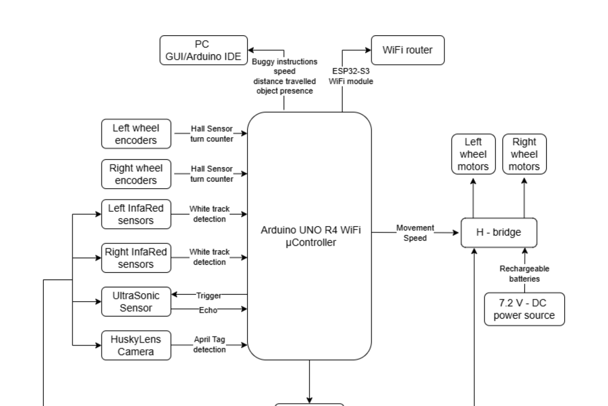
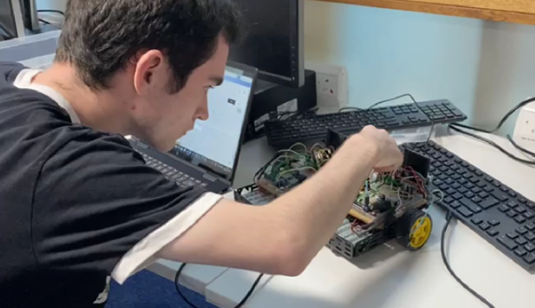
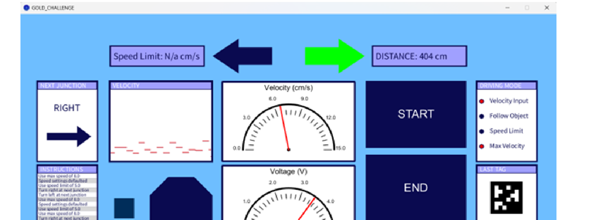

Designed and implemented an autonomous buggy capable of track navigation, obstacle handling, and AprilTag-triggered behaviours using IR, ultrasonic sensing, HuskyLens vision, PID control, and a WiFi-connected GUI.
System Architecture
- IR sensor array for line detection and lateral error estimation.
- Ultrasonic sensor for obstacle distance measurement and object following.
- HuskyLens camera for AprilTag recognition and mode/behaviour switching.
- PID control for speed regulation and stable tracking.
- WiFi communication to external GUI for monitoring and control.
Engineering Challenges
- Tuned PID under noisy measurements; used smoothing to reduce velocity fluctuation.
- Handled latency/packet loss in wireless messaging.
- Debugged I2C interference (HuskyLens) and hardware reliability issues.
My Contribution
- Implemented and tuned PID velocity controller.
- Developed telemetry compression + decoding protocol for Arduino ↔ GUI.
- Integrated HuskyLens camera and AprilTag logic for behavioural modes.
- Implemented WiFi-based GUI and comms loop.
- System-level debugging and hardware troubleshooting.
Full technical report (PDF) • Code available on request


